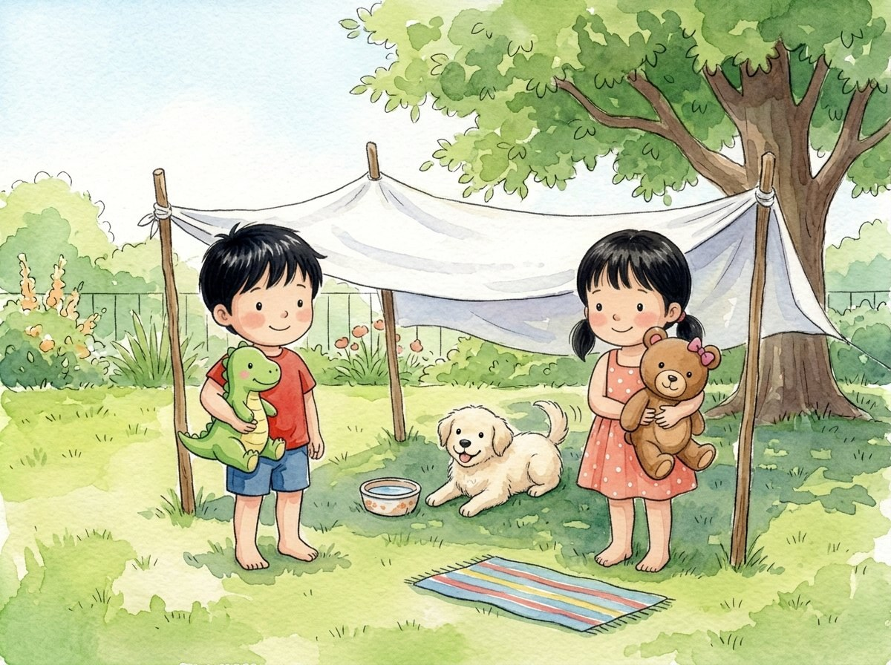

Kindergarten · Science · K-PS3-2
Shade for Pelusa
A story about a hot little puppy and a homemade shade.
Three new words
A darker, cooler place where something blocks the sunlight.
A little cold; nice when it is hot outside.
To make something by putting parts together, like sticks and a bedsheet.
Tap a picture to hear the word and what it means.
The story
Pelusa the puppy is playing in the yard. It is very sunny.
Pelusa pants with her tongue out. She is so hot!
"Let's make her some shade!" says Génesis.
Adrián brings four sticks. Génesis brings a thin towel and a thick bedsheet.
First they try the thin towel. The sunlight shines right through it!
Then they put the thick bedsheet over the sticks. Underneath, there is a big shade.
They touch the ground with their hands.
Under the bedsheet, the ground is cooler than in the sun.
Pelusa lies down in the shade and wags her tail.
"We built it ourselves!" says Adrián.
The bedsheet blocks the sunlight, so the ground underneath gets less warm.
Questions
Listen to the question and tap the right picture.
-
Question A. What did they use to make a big shade?
They put the thick bedsheet over the sticks, and there was a big shade underneath.
-
Question B. How was the ground under the bedsheet?
Under the bedsheet, the ground was cooler than in the sun.
-
Question C. Why does the shade get less warm?
The bedsheet blocks the sunlight, so the ground underneath gets less warm.